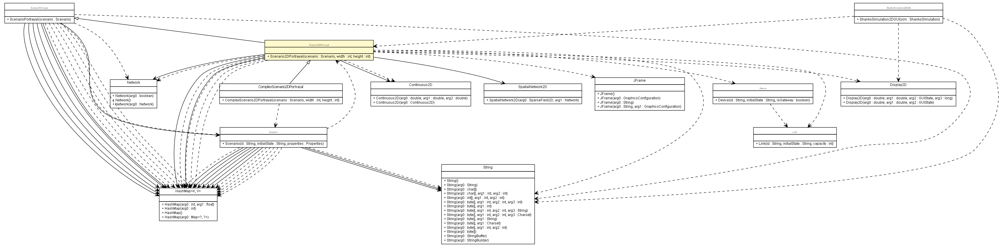

es.upm.dit.gsi.shanks.model.scenario.portrayal
Class Scenario2DPortrayal

java.lang.Object
 es.upm.dit.gsi.shanks.model.scenario.portrayal.ScenarioPortrayal
es.upm.dit.gsi.shanks.model.scenario.portrayal.Scenario2DPortrayal
es.upm.dit.gsi.shanks.model.scenario.portrayal.ScenarioPortrayal
es.upm.dit.gsi.shanks.model.scenario.portrayal.Scenario2DPortrayal
- Direct Known Subclasses:
- ComplexScenario2DPortrayal
public abstract class Scenario2DPortrayal
- extends ScenarioPortrayal
- Author:
- a.carrera
|
Constructor Summary |
Scenario2DPortrayal(Scenario scenario,
int width,
int height)
The constructor needs the scenario and the size of the simulation |
| Methods inherited from class es.upm.dit.gsi.shanks.model.scenario.portrayal.ScenarioPortrayal |
addDataSerieToHistogram, addDataSerieToScatterPlot, addDataSerieToTimeChart, addDataToDataSerieInTimeChart, addHistogram, addPortrayal, addScatterPlot, addTimeChart, containsDataSerieInTimeChart, getDataSerieFromTimeChart, getHistogram, getHistograms, getPortrayals, getScatterPlot, getScatterPlots, getScenario, getTimeChart, getTimeCharts, removeDataSerieFromHistogram, removeDataSerieToTimeChart, removeHistogram, removePortrayal, removeScatterPlot, removeTimeChart, setHistogramRange, setPortrayals, setupPortrayals, updateDataSerieOnScatterPlot, updateDataSerieToHistogram, updateDataToDataSerieInTimeChart |
| Methods inherited from class java.lang.Object |
clone, equals, finalize, getClass, hashCode, notify, notifyAll, toString, wait, wait, wait |
MAIN_DISPLAY_ID
public static final String MAIN_DISPLAY_ID
- See Also:
- Constant Field Values
Scenario2DPortrayal
public Scenario2DPortrayal(Scenario scenario,
int width,
int height)
throws ShanksException
- The constructor needs the scenario and the size of the simulation
- Parameters:
scenario - width - height -
- Throws:
DuplicatedPortrayalIDException
ShanksException
addPortrayals
public abstract void addPortrayals()
- Add extra portrayals to one display of the simulation
getDisplays
public HashMap<String,sim.display.Display2D> getDisplays()
- Returns:
- Map with key: Display name and value: Display2D
setDisplayList
public void setDisplayList(HashMap<String,sim.display.Display2D> displayList)
- Parameters:
displayList -
addDisplay
public void addDisplay(String displayID,
sim.display.Display2D display)
throws ShanksException
- Parameters:
displayID - display -
- Throws:
DuplictaedDisplayIDException
ShanksException
getDisplay
public sim.display.Display2D getDisplay(String displayID)
- Parameters:
displayID -
- Returns:
- Display2D object
removeDisplay
public void removeDisplay(String displayID)
- Parameters:
displayID -
getFrameList
public HashMap<String,JFrame> getFrameList()
- Returns:
- Map with key: JFrame name and value: JFrame
setFrameList
public void setFrameList(HashMap<String,JFrame> frameList)
- Parameters:
frameList -
addFrame
public void addFrame(String frameID,
JFrame frame)
throws ShanksException
- Parameters:
frameID - frame -
- Throws:
DuplictedFrameIDException
ShanksException
removeFrame
public void removeFrame(String frameID)
- Parameters:
frameID -
placeElements
public abstract void placeElements()
- Draw all elements of the simulation
situateDevice
public void situateDevice(Device d,
double x,
double y)
- To place a device in the simulation
- Parameters:
d - x - y -
drawLink
public void drawLink(Link link)
- To draw a link
- Parameters:
link -
getPlacedDevices
public sim.field.continuous.Continuous2D getPlacedDevices()
- Specified by:
getPlacedDevices in class ScenarioPortrayal
- Returns:
- the SparseGrid2D or the Continuous3D object
getLinks
public sim.field.network.Network getLinks()
- Specified by:
getLinks in class ScenarioPortrayal
- Returns:
- the Network object with all links
Copyright © 2011-2013 Grupo de Sistemas Inteligentes - Universidad Politécnica de Madrid. All Rights Reserved.